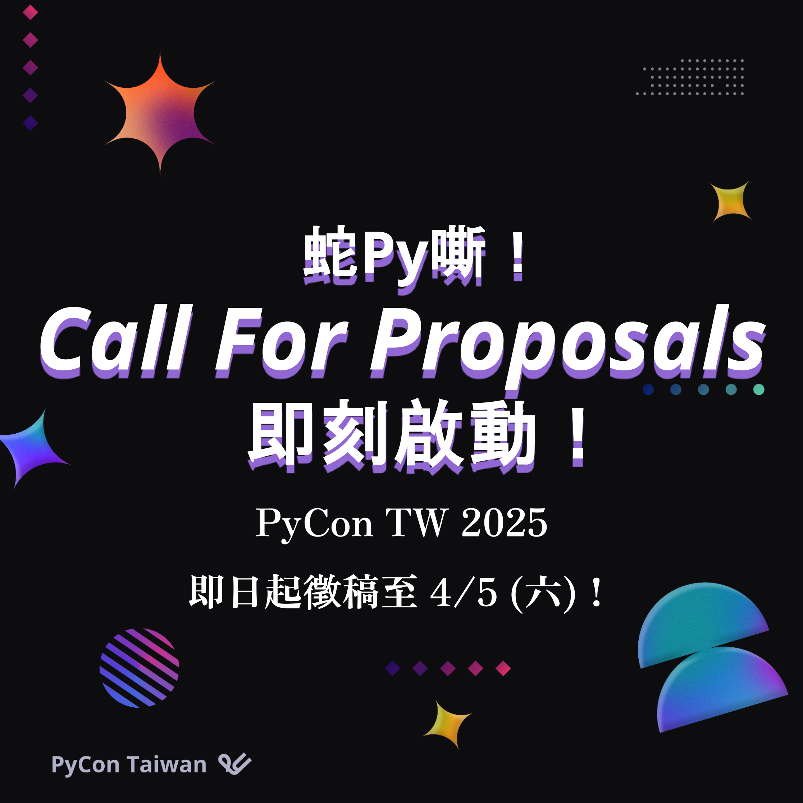
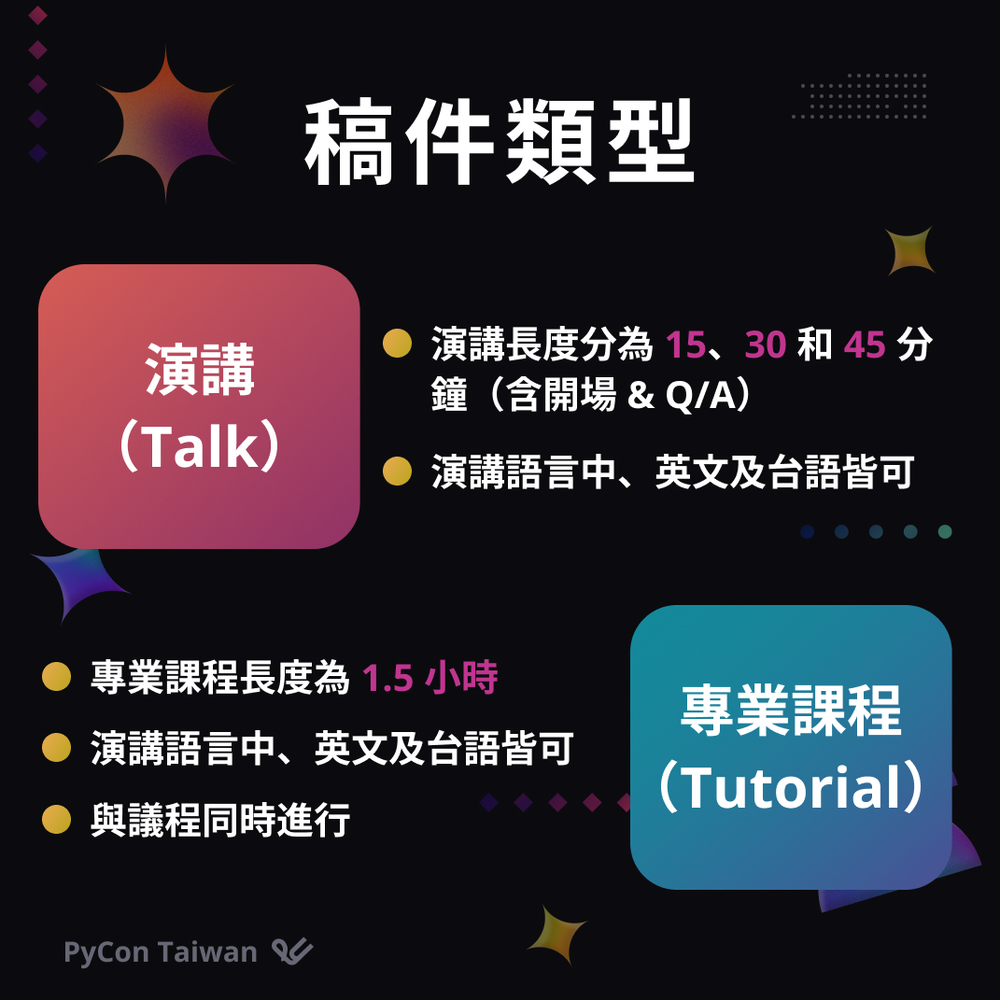
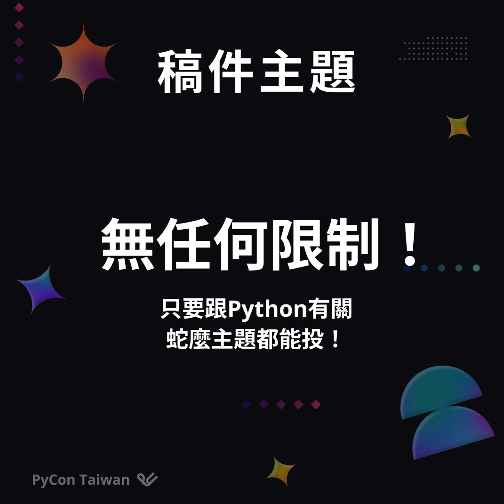
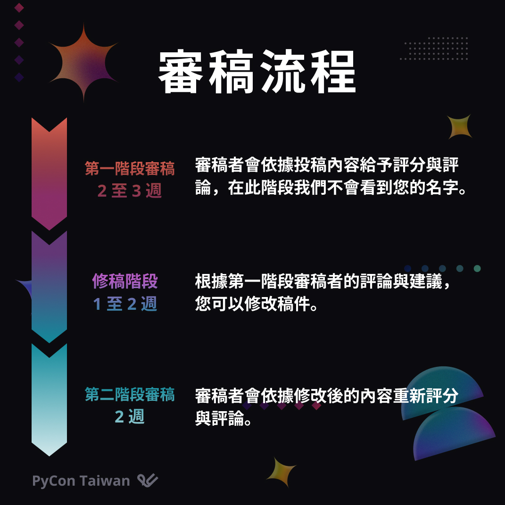
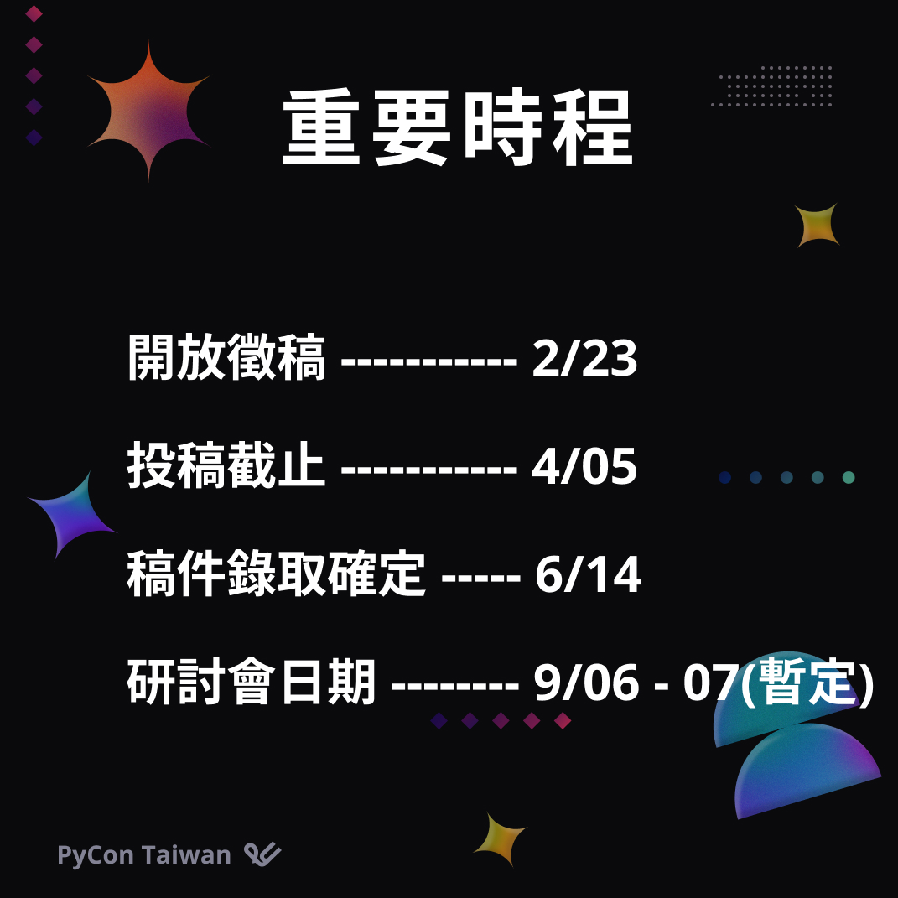

PyCon TW 2025 Call for Proposal (CFP) 即刻開跑啦！
Posted on Sun 23 February 2025 in announcement

【PyCon TW 2025 Call for Proposal (CFP) 即刻開跑啦！🏃♂️】
🐍拍粉們，該是讓你的靈活點子蛇上舞台的時候了！🐍
忘不了去年 PyCon TW 大會的精彩講題嗎？盤桓著數不盡的想法只差一個機會嗎？
新一年的CFP張開雙手歡迎你！馬上前往 PyCon TW 2025 官網，來個「註冊帳號、準備好稿件、進行投稿」一條龍，分享你的 Python 之道吧！🚀
📌 投稿時間
📅 CFP 開放：2/23 (日) 00:00:00 (AoE)
⏳ 截止時間：4/5 (六) 23:59:59 (AoE)
📌 怎麼投稿？
到PyCon TW 2025 官網的投稿系統註冊帳號、馬上投稿！
蛇往機會的投稿系統網址在這裡👉：https://reurl.cc/1XVD5G
📌 可以投蛇麼？
任何與 Python 有關的主題都能來！無論是 AI、ML、FinTech、DA、開源專案、實踐應用甚至是開發血淚史，各種用 Python 點亮生活與世界的議題都可以！🐍
除了懶人包還想知道更多嗎？趕快上 CFP 頁面看看👉： https://reurl.cc/748O61
📌 需要靈感？
來點過去的講題刺激產能🔥
💡 PyCon TW 2024: https://reurl.cc/WAQr8L
💡 PyCon TW 2023: https://reurl.cc/QearvZ
💡 PyCon APAC 2022： https://reurl.cc/n7VXZD
💡 PyCon TW 2021： https://reurl.cc/RvdDOr
飛機上有蛇，PyCon 上有你，讓我們一起打造最直擊趨勢的 PyCon TW 2025！✨
除了投稿，也歡迎喜歡 Python 的拍粉們，一起加入 PyCon TW 2025 團隊，成為志工吧！ 🏃♂️🏃♂️
👉PyCon TW 2025 志工報名表單：https://reurl.cc/A6m7bE
pycontw2025 #pycontw #python #talks #cfp



